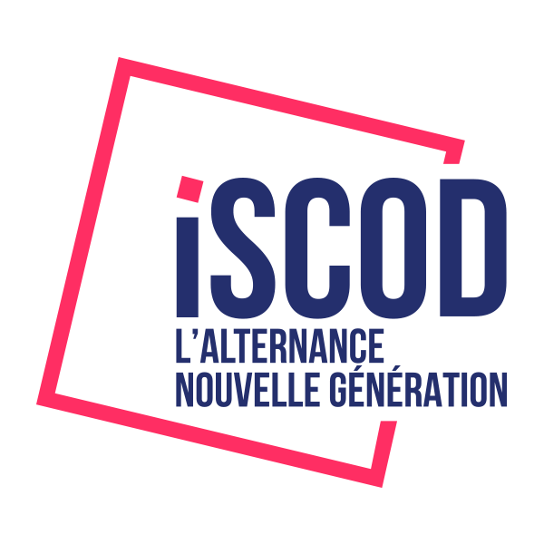
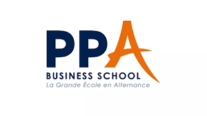
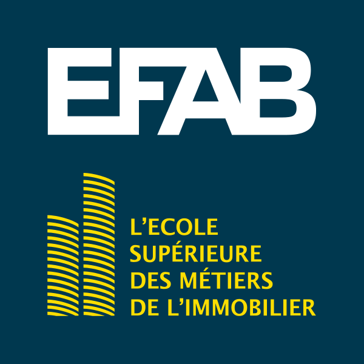
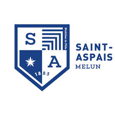

Talents et recrutement
Structurer les pratiques RH, professionnaliser le recrutement et accompagner les talents.
Sourcing · Marque employeur · Relations écoles · Entretien · Onboarding
RH · Formation · IA appliquée
Des interventions concrètes pour faire progresser les pratiques métier.
Former autrement
Après plus de 12 ans d’expérience dans le recrutement, l’accompagnement professionnel, les relations écoles et la formation, SJ Conseil conçoit depuis 2019 des interventions sur mesure pour faire progresser les individus, les équipes et les organisations.
Chaque mission commence par une écoute précise du besoin : comprendre vos publics, vos objectifs, vos contraintes et vos enjeux terrain pour proposer un format réellement adapté.
Expertises
Structurer les pratiques RH, professionnaliser le recrutement et accompagner les talents.
Sourcing · Marque employeur · Relations écoles · Entretien · Onboarding
IA appliquée
Gagner du temps sans perdre sa valeur ajoutée.
L’IA transforme les façons de travailler. Mais la vraie question n’est pas de tout automatiser. La vraie question est : quelles tâches peuvent être accélérées par l’IA, et où l’humain doit-il garder toute sa valeur ?
SJ Conseil accompagne les RH, étudiants, formateurs, managers et professionnels dans une utilisation concrète, progressive et responsable de l’IA.
Objectif : mieux rédiger, mieux structurer, mieux analyser, mieux s’organiser, sans perdre le sens métier, l’esprit critique et la responsabilité humaine.
Elle peut aider à produire plus vite, structurer une idée, synthétiser, préparer un support ou automatiser certaines tâches répétitives. Mais elle ne remplace pas le discernement, la relation humaine, la décision, l’expérience terrain et la responsabilité professionnelle.
Chez SJ Conseil, l’IA est abordée comme un levier : utile, concret, cadré.Progression
Usages
RH
Formateurs
Étudiants et professionnels
Managers et équipes support
Une IA utile, jamais automatique.L’IA peut accélérer. L’humain doit toujours cadrer, vérifier, décider et assumer.
- Confidentialité
- RGPD
- Biais
- Vérification
- Limites de l’automatisation
- Validation humaine
Formation IA
Construisons une formation adaptée à votre niveau, vos métiers et vos objectifs.
Méthode
Les formations partent du réel : vos publics, vos contraintes, vos situations métier et vos objectifs opérationnels.
Chaque intervention fait pratiquer, questionner, produire et repartir avec des outils directement réutilisables.
Une formation terrain, ce n’est pas une salle qui écoute. C’est un groupe qui comprend, pratique et repart avec quelque chose à faire.
Références
Entreprises, écoles et organisations accompagnées sur des sujets RH, recrutement, management, formation et IA appliquée.




Des interventions conçues pour relier les enjeux terrain, la pédagogie active et les transformations métiers.

À propos
Je suis Stéphanie Beaufumé, consultante RH et formatrice. J’accompagne les écoles, entreprises et professionnels sur leurs enjeux RH : recrutement, sourcing, formation, insertion professionnelle, transformation digitale et évolution des pratiques.
Mon approche : rendre les sujets RH concrets, actionnables et utiles.
J’intègre l’IA comme un levier concret pour gagner en efficacité, structurer les usages et développer l’autonomie, dans les RH, la formation, le coaching et les pratiques professionnelles du quotidien.
Une discipline sportive bien ancrée, une fidélité assumée à Alpine, un goût certain pour les univers puissants… et une exigence constante : faire progresser, avec sérieux, énergie et un peu de panache.
Que la Force soit avec vous.Contact
Une formation.
Une conférence.
Un séminaire.
Un accompagnement sur mesure.